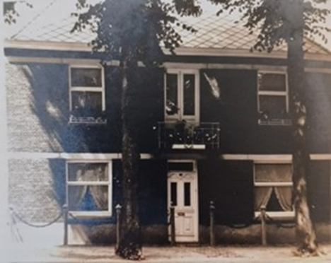
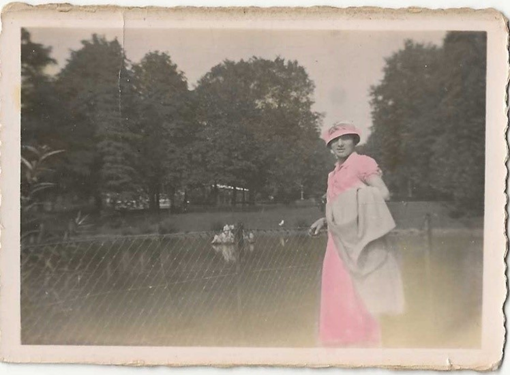
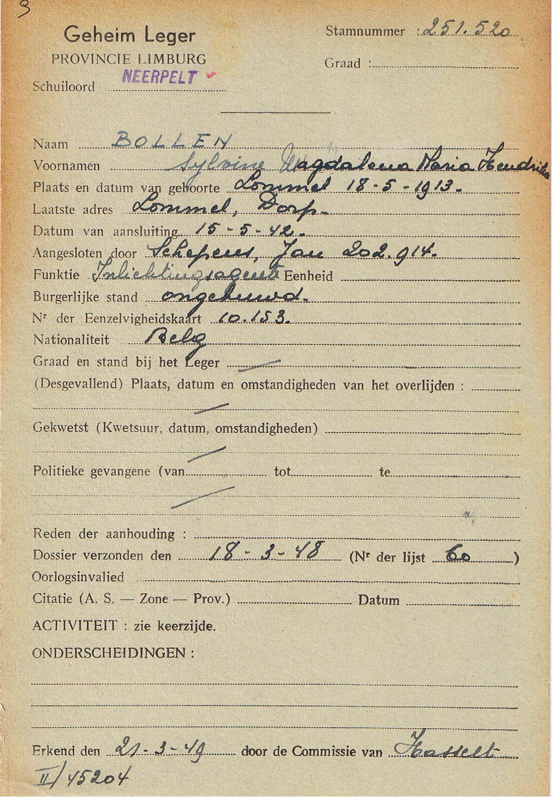
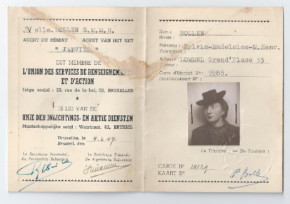
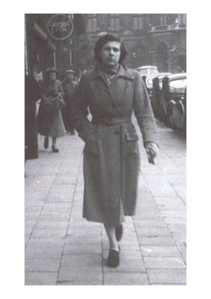
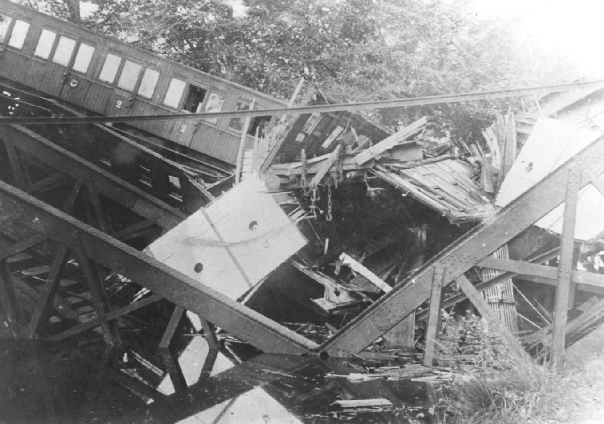
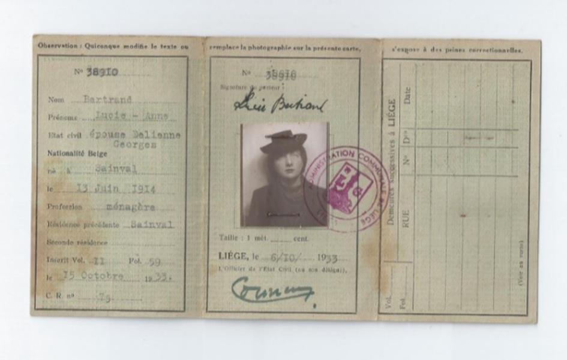
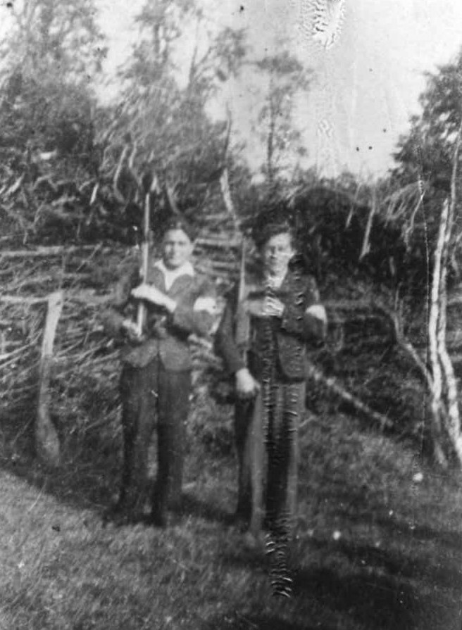

Sylvie Madeleine Marie Henri Bollen werd geboren op 18 mei 1913 in Lommel, vlak voor het uitbreken van de Eerste Wereldoorlog. Als dochter van Peter Hendrik Bollen, een kandidaat-notaris uit Lommel, en Maria Johanna Laporte uit 's-Gravenhage, groeide ze op in een welgestelde familie. Samen met haar vier broers en zussen, Renée, Esther, Ludolphe en Marcel, bracht Sylvie haar jeugd door in Lommel De familie Bollen genoot van een comfortabel bestaan in het landelijke, conservatieve Noord-Limburg, een omgeving die sterk veranderde door de opkomst van de industrie, zoals de zinkfabrieken in Overpelt en Lommel.
Sylvie Bollen: Een Onmisbare Schakel in het Groot Verzet

Familiefoto met moeder en vader Bollen onder en boven VLNR Sylvie, Esther en Renée Bollen. Bron: familiearchief familie Daniëls
De industrialisatie van de regio, vooral na de aanleg van de spoorlijn tussen Antwerpen en het Ruhrgebied, leidde tot zowel economische vooruitgang als sociale spanningen. De opkomst van het socialisme stuitte op verzet van de Vlaams-christelijke bevolking, een verdeeldheid die zich zou doorzetten tijdens de Tweede Wereldoorlog. Toen de Duitse troepen België binnenvielen op 10 mei 1940, werd Sylvie, zoals vele anderen in Lommel, abrupt geconfronteerd met de harde realiteit van de Duitse Bezetting. Ondanks de aanvankelijke schok van de bezetting, koos Sylvie al snel de kant van het verzet.

Ouderlijk huis van Sylvie Bollen, in dit huis werden tijdens de oorlog Duitse officieren gestationeerd. Bron: Marc Maris

Sylvie Bollen in 1936. Bron: familiearchief familie Daniëls
De Keuze voor Verzet

Jan Schepens (4e van links). Bron: erfgoed Lommel
Haar betrokkenheid begon via Jan Schepens, een dorpsgenoot die zich inzette voor ontsnappingslijnen voor geallieerde soldaten en neergeschoten piloten. Dat zou later ook haar hoofdactiviteit worden binnen het verzet. Via Jan werd Sylvie in 1943 geïntroduceerd bij de Belgische Nationale Beweging (B.N.B.), die kort daarna opging in de grotere verzetsorganisatie Het Geheim Leger. Deze organisatie zou snel uitgroeien tot de grootste en best georganiseerde verzetsbeweging in België.
Vrouwen werden steeds meer betrokken bij het verzet, vooral vanaf 1943, omdat zij minder opvielen bij de bezetter. Vrouwen werden namelijk niet opgeroepen voor verplichte tewerkstelling in Duitsland, en werden daardoor als minder gevaarlijk gezien. Sylvie werd via Jan Schepens voorgesteld aan Marcel Royers, een sleutelfiguur binnen Het Geheim Leger, die haar als koerierster aannam. Als koerierster had Sylvie de belangrijke taak om informatie en documenten te verspreiden en goederen te vervoeren, vaak onder gevaarlijke omstandigheden.

Lidkaart van het geheim leger, sector Neerpelt, op naam van Sylvie Bollen. Bron: heemkundige kring Overpelt

Lidkaart unie der inlichtings- en actie dientsen, op naam van Sylvie Bollen. Bron: familiearchief familie Daniëls
Het Werk als Koerierster en Inlichtingenagent

Koerierster Marie Liekens, schuilnaam Agnes. Bron: Helden van het verzet
Sylvie werkte binnen de sector Neerpelt, die een uitgestrekt operatieterrein besloeg, van Neerpelt en Lommel tot Hechtel en Bocholt. Ze kwam in contact met verschillende verzetsleden en was actief in het verspreiden van aanplakbiljetten, het overbrengen van documenten, wapens en andere benodigdheden. Tijdens haar werk ontmoette ze onder andere de jonge koerierster , met wie ze regelmatig contact had. Het contact met Agnes werd echter abrupt afgebroken toen zij in november 1943 door de Geheime Feldpolizei werd opgepakt. Toen haar netwerk steeds verder werd ontmanteld door de Duitsers, breidde Sylvie haar rol uit. Ze verzamelde informatie over de Duitse troepenbewegingen en gaf deze door aan haar contacten in Leopoldsburg, waaronder Jean Vreys, en later aan het hoofdbureau in Hasselt. Haar spionagewerk werd van cruciaal belang voor de verzetsactiviteiten in de regio. Ze gebruikte haar kennis van het Duits om documenten die door ingekwartierde Duitse officieren waren achtergelaten te vertalen, een taak die haar zus Renée vaak voor haar voltooide. Sylvie bracht de vertaalde documenten naar haar contacten en speelde zo een sleutelrol in de coördinatie van verzetsacties.
Sabotage en Spionage

Door het verzet vernielde spoorwegbrug, Balen. Bron: erfgoed Lommel
Op 11 november 1943, de wapenstilstand van de Eerste Wereldoorlog, was Sylvie betrokken bij een van de eerste sabotagedaden in Noord-Limburg: het ontsporen van een Wehrmacht-trein. Deze actie was niet alleen praktisch, maar ook symbolisch, en markeerde het begin van intensievere verzetsactiviteiten in de regio. Sylvie bleef een essentiële schakel binnen de verzetsorganisatie, die niet alleen informatie verzamelde, maar ook betrokken was bij sabotage en het smokkelen van wapens.

Geheim identiteitsbewijs op de naam van Lucie-Anne Bertrand, met pasfoto waar men duidelijk Sylvie Bollen op kan herkennen. Bron: familiearchief familie Daniëls
De gevangenneming van Marcel Royers en de intensieve jacht van de Duitsers op verzetsleden maakten de situatie steeds gevaarlijker. Sylvie zette haar werk echter voort, vaak onder de schuilnaam Lucie-Anne Bertrand om onopgemerkt te blijven. Haar vermogen om zich door het bezette gebied te bewegen zonder opgemerkt te worden, stelde haar in staat om de geallieerden te helpen en een actieve bijdrage te leveren aan de van haar regio.
De Rol van Vrouwen in het Verzet

Verzetsstrijders bij de bevrijding in Lommel. Bron: erfgoed Lommel
Sylvie's werk als koerierster en inlichtingenagent werd pas na de bevrijding volledig erkend. In oktober 1944 werd ze officieel lid van Het Geheim Leger, dat op dat moment met meer dan 50.000 leden de grootste gewapende verzetsorganisatie van België was. Na de oorlog vestigde ze zich in Sint-Joris-Weert en leidde daar een rustig leven, maar bleef regelmatig terugkeren naar Lommel om haar zussen en vrienden te bezoeken.
Het verhaal van Sylvie Bollen weerspiegelt de belangrijke en vaak over het hoofd geziene rol die vrouwen speelden in het verzet. Ondanks de gevaren en de clandestiene aard van hun werk, waren vrouwen als Sylvie essentieel in het organiseren van verzetsactiviteiten, het smokkelen van wapens, het verzamelen van inlichtingen en het ondersteunen van de ondergedoken verzetsleden. Hun bijdragen worden vaak niet genoeg belicht, maar hun moed en vastberadenheid waren onmiskenbaar. De verhalen van verzetsstrijders, vooral de vrouwen, verdienen het om herinnerd te worden, zodat toekomstige generaties begrijpen welke offers er zijn gebracht in de strijd tegen de bezetter.
Sylvie Bollen blijft dan ook een onmisbare schakel in de geschiedenis van het groot verzet en een inspirerend voorbeeld van moed en patriotisme in een tijd van onbeschrijfelijke duisternis.